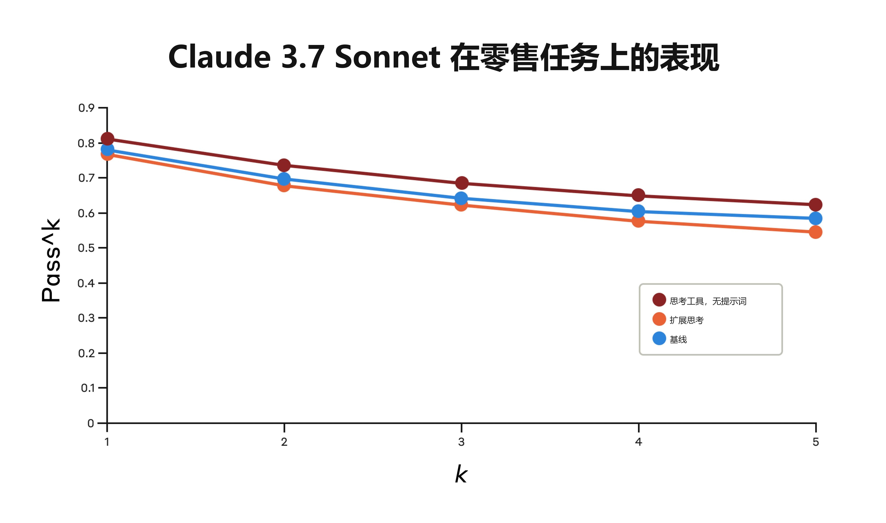

「think」工具：让 Claude 在复杂的工具使用场景中停下来思考
📖 中文摘要
专业术语注解
「think」工具：让Claude在工具调用过程中插入一步专用思考的工具，只把想法追加到日志，不获取新信息也不改动数据库扩展思考（extended thinking）：Claude在开始生成回答之前进行的长篇内部推理能力，与本工具的作用时点不同τ-bench：模拟真实客服对话、要求遵守复杂政策指南并用工具操作环境数据库的智能体基准pass^k：k次独立试验全部成功的概率并在任务上取平均，衡量一致性与可靠性，区别于pass@k的至少一次成功SWE-bench：用真实GitHub软件工程问题评测模型修复代码能力的基准📄 中文全文
- 类别： 工程（Engineering）
- 来源： https://www.anthropic.com/research/claude-think-tool
工程（Engineering） 2025 年 3 月 20 日 已发布 2025 年 3 月 20 日 团队 工程 主题
相关文章 * 工程 2025 年 11 月 4 日 用 MCP 执行代码：构建更高效的智能体
阅读更多 * 2025 年 12 月 15 日
扩展思考更新
自首次发布以来，扩展思考（extended thinking）能力已有改进，因此在多数情况下我们建议使用该功能，而不是专用的 think 工具。扩展思考提供类似的好处——给 Claude 空间去推理复杂问题——而且集成更好、性能更佳。实现细节见我们的扩展思考文档。
在我们持续增强 Claude 复杂问题求解能力的过程中，我们发现了一种特别有效的做法：一个「think」工具，在复杂任务期间为结构化思考开辟专门的空间。 这一简单却强大的技术——正如我们下文将解释的，它不同于 Claude 新的「扩展思考」能力（扩展思考的实现细节见此处)——在 Claude 的智能体式工具使用能力上带来了显著提升。这包括遵循策略、做出一致的决策，以及处理多步问题，而实现开销极小。 在这篇博文中，我们将探讨如何在不同的应用中实现「think」工具，并基于经过验证的基准结果，与开发者分享实用指导。
什么是「think」工具？
借助「think」工具，我们让 Claude 在通往最终答案的过程中，可以加入一个额外的思考步骤——并拥有自己专属的空间。 虽然听起来与扩展思考相似，但它是不同的概念。扩展思考关乎 Claude 在开始生成回答之前做什么。在扩展思考中，Claude 在采取行动前会深入考虑并迭代其计划。「think」工具则是让 Claude 在开始生成回答之后，加入一个停下来思考的步骤：思考自己是否拥有继续推进所需的全部信息。这在执行长链工具调用、或与用户进行长多步对话时特别有用。 这使得「think」工具更适合这样的情形：仅凭用户查询，Claude 无法获得拟定回答所需的全部信息，且它需要处理外部信息（例如工具调用结果中的信息）。Claude 用「think」工具所做的推理，不如扩展思考所能获得的那么周全，也更聚焦于模型发现的新信息。 对于更简单的工具使用场景，例如非顺序工具调用或直截了当的指令遵循，我们建议使用扩展思考。在你不需要 Claude 调用工具的使用场景中——如编程、数学与物理——扩展思考也有用。「think」工具更适合这样的情形：Claude 需要调用复杂工具、在长链工具调用中仔细分析工具输出、在充满详细指南的政策密集环境中行动，或做出每一步都建立在前面步骤之上、且错误代价高昂的顺序决策。 下面是一个示例实现，使用的是来自 τ-Bench 的标准工具规格格式：
{
"name": "think",
"description": "Use the tool to think about something. It will not obtain new information or change the database, but just append the thought to the log. Use it when complex reasoning or some cache memory is needed.",
"input_schema": {
"type": "object",
"properties": {
"thought": {
"type": "string",
"description": "A thought to think about."
}
},
"required": ["thought"]
}
}
在 τ-Bench 上的表现
我们用 τ-bench（tau-bench）评估了「think」工具。τ-bench 是一个综合性基准，旨在测试模型在真实的客户服务场景中使用工具的能力，而「think」工具是该评估标准环境的一部分。 τ-bench 评估 Claude 的以下能力： * 在模拟用户的真实对话中周旋 * 一致地遵循复杂的客户服务智能体策略指南 * 使用多种工具访问并操作环境数据库
τ-bench 使用的主要评估指标是 pass^k，它衡量在给定任务上全部 k 次独立试验都成功的概率，并在所有任务上取平均。不同于其他 LLM 评估中常见的 pass@k 指标（衡量 k 次试验中是否至少有一次成功），pass^k 评估的是一致性与可靠性——这对客户服务应用至关重要，因为一贯遵守政策是必需的。
表现分析
我们的评估比较了几种不同的配置： 1. 基线（不用「think」工具，也不开扩展思考模式） 2. 仅扩展思考模式 3. 仅「think」工具 4. 「think」工具加优化提示词（针对航空领域）
结果显示，当 Claude 3.7 在基准的「航空」与「零售」客户服务领域中有效使用「think」工具时，表现有大幅提升： * 航空领域：「think」工具加优化提示词在 pass^1 指标上达到 0.570，而基线仅为 0.370——相对提升 54%； * 零售领域：仅「think」工具就达到 0.812，而基线为 0.783。
 Claude 3.7 Sonnet 在 Tau-Bench 评估「航空」领域上四种不同配置下的表现。
Claude 3.7 Sonnet 在 Tau-Bench 评估「航空」领域上四种不同配置下的表现。
Claude 3.7 Sonnet 在 Tau-Bench 评估「航空」领域上的表现
配置 k =1 k =2 k =3 k =4 k =5 「think」+ 提示词 0.584 0.444 0.384 0.356 0.340 「think」 0.404 0.254 0.186 0.140 0.100 扩展思考 0.412 0.290 0.232 0.192 0.160 基线 0.332 0.206 0.148 0.116 0.100 四种不同配置下的评估结果。分数为比例值。 航空领域的最佳表现，来自把「think」工具与一份优化提示词配合使用——该提示词给出了在分析客户请求时可采用的推理方法示例。下面是优化提示词的示例：
## Using the think tool
Before taking any action or responding to the user after receiving tool results, use the think tool as a scratchpad to:
- List the specific rules that apply to the current request
- Check if all required information is collected
- Verify that the planned action complies with all policies
- Iterate over tool results for correctness
Here are some examples of what to iterate over inside the think tool:
<think_tool_example_1>
User wants to cancel flight ABC123
- Need to verify: user ID, reservation ID, reason
- Check cancellation rules:
* Is it within 24h of booking?
* If not, check ticket class and insurance
- Verify no segments flown or are in the past
- Plan: collect missing info, verify rules, get confirmation
</think_tool_example_1>
<think_tool_example_2>
User wants to book 3 tickets to NYC with 2 checked bags each
- Need user ID to check:
* Membership tier for baggage allowance
* Which payments methods exist in profile
- Baggage calculation:
* Economy class × 3 passengers
* If regular member: 1 free bag each → 3 extra bags = $150
* If silver member: 2 free bags each → 0 extra bags = $0
* If gold member: 3 free bags each → 0 extra bags = $0
- Payment rules to verify:
* Max 1 travel certificate, 1 credit card, 3 gift cards
* All payment methods must be in profile
* Travel certificate remainder goes to waste
- Plan:
1. Get user ID
2. Verify membership level for bag fees
3. Check which payment methods in profile and if their combination is allowed
4. Calculate total: ticket price + any bag fees
5. Get explicit confirmation for booking
</think_tool_example_2>
特别有意思的是不同方法的对比。使用「think」工具配合优化提示词，取得了明显优于扩展思考模式的结果（后者与未经提示的「think」工具表现相近）。单独使用「think」工具（不加提示词）比基线有提升，但仍不及优化方案。 「think」工具与优化提示词结合带来了遥遥领先的最强表现，这很可能是因为基准中航空政策部分复杂度很高，模型从获得「如何思考」的示例中获益最多。 在零售领域，我们也测试了多种配置，以理解每种方法的具体影响。

Claude 3.7 Sonnet 在 Tau-Bench 评估「零售」领域上三种不同配置下的表现。Claude 3.7 Sonnet 在 Tau-Bench 评估「零售」领域上的表现
配置 k =1 k =2 k =3 k =4 k =5 「think」+ 无提示词 0.812 0.735 0.685 0.650 0.626 扩展思考 0.770 0.681 0.623 0.581 0.548 基线 0.783 0.695 0.643 0.607 0.583 三种不同配置下的评估结果。分数为比例值。 即便没有额外提示词，「think」工具也取得了 0.812 的最高 pass^1 分数。零售政策相比航空领域明显更容易处理，Claude 仅仅因为有了一块思考的空间、无需更多指导就得以提升。
来自 τ-Bench 分析的关键洞见
我们的详细分析揭示了几种有助于你有效实现「think」工具的规律： 1. 在困难领域，提示词至关重要。仅仅让「think」工具可用，或许能带来一些提升，但配合优化提示词后，在困难领域的效果会显著更好。不过，较容易的领域可能仅靠「think」的可用性就能获益。 2. 跨试验的一致性提升。使用「think」带来的提升在 k=5 以内的 pass^k 上都得以保持，说明该工具帮助 Claude 更有效地处理边缘情况与不寻常场景。
在 SWE-Bench 上的表现
在评估 Claude 3.7 Sonnet 时，我们在 SWE-bench 设置中加入了类似的「think」工具，这帮助取得了 0.623 的最先进（state-of-the-art）分数。改编后的「think」工具定义如下：
{
"name": "think",
"description": "Use the tool to think about something. It will not obtain new information or make any changes to the repository, but just log the thought. Use it when complex reasoning or brainstorming is needed. For example, if you explore the repo and discover the source of a bug, call this tool to brainstorm several unique ways of fixing the bug, and assess which change(s) are likely to be simplest and most effective. Alternatively, if you receive some test results, call this tool to brainstorm ways to fix the failing tests.",
"input_schema": {
"type": "object",
"properties": {
"thought": {
"type": "string",
"description": "Your thoughts."
}
},
"required": ["thought"]
}
}
我们的实验（使用「think」工具的 n =30 个样本，不使用的 n =144 个样本）显示，加入该工具带来的独立效应是平均提升 1.6%（Welch's t 检验：t(38.89) = 6.71，p < .001，d = 1.47）。
何时使用「think」工具
基于这些评估结果，我们识别出 Claude 从「think」工具中获益最多的具体场景： 1. 工具输出分析。 当 Claude 需要在行动前仔细处理先前工具调用的输出，并可能需要回溯其做法时； 2. 政策密集的环境。当 Claude 需要遵循详细指南并核验合规性时；以及 3. 顺序决策。当每个行动都建立在前面的行动之上、且错误代价高昂时（常见于多步领域）。
实现最佳实践
为了在 Claude 上把「think」工具用到最好，基于我们的 τ-bench 实验，我们推荐以下实现实践。
1. 结合领域特定示例的策略性提示
最有效的做法是就何时以及如何使用「think」工具给出清晰指示，例如 τ-bench 航空领域所用的那一份。提供贴合你具体用例的示例，能显著改善模型使用「think」工具的效果： * 推理过程所期望的详细程度； * 如何把复杂指令拆解为可执行的步骤； * 处理常见场景的决策树；以及 * 如何检查是否已收集齐所有必要信息。
2. 把复杂指导放进系统提示词
我们发现，当关于「think」工具的说明较长或较复杂时，把它们放进系统提示词比放在工具描述本身更有效。这种做法提供了更宽的上下文，帮助模型更好地把思考过程融入其整体行为。
何时不该使用「think」工具
尽管「think」工具能带来可观的提升，但它并不适用于所有工具使用场景，而且确实要付出提示词变长与输出 token 变多的代价。具体来说，我们发现「think」工具在以下用例中没有带来任何提升： 1. 非顺序工具调用。如果 Claude 只需进行单次工具调用或多次并行调用就能完成任务，加入「think」不太可能带来任何提升。 2. 简单的指令遵循。当 Claude 需要遵守的约束不多、且其默认表现已经足够好时，额外的「think」不太可能带来收益。
快速上手
「think」工具是对你的 Claude 实现的一个直截了当的补充，只需几个步骤就能产生有意义的提升： 1. 在智能体式工具使用场景中测试。 从有挑战性的用例开始——即 Claude 目前在政策合规、或长工具调用链中的复杂推理上仍感吃力的场景。 2. 加入工具定义。实现一个针对你所在领域定制的「think」工具。它只需极少的代码，却能启用更有结构的推理。同时考虑把何时以及如何使用该工具的说明、以及与你领域相关的示例，一并放进系统提示词。 3. 监控并优化。观察 Claude 在实践中如何使用该工具，并调整提示词以鼓励更有效的思考模式。
最棒的一点是，加入这个工具在表现结果方面的负面影响极小。除非 Claude 决定使用它，否则它不改变对外行为，也不干扰你现有的工具或工作流。
结论
我们的研究已经证明，「think」工具能显著提升 Claude 3.7 Sonnet 在需要遵守政策、并在长链工具调用中进行推理的复杂任务上的表现¹。「think」并非放之四海皆准的方案，但对正确的用例能带来可观的收益，而实现复杂度极小。 我们期待看到你将如何使用「think」工具，与 Claude 一起构建更有能力、更可靠、更透明的 AI 系统。
脚注
01 虽然我们的 τ-Bench 结果聚焦于 Claude 3.7 Sonnet 在「think」工具下的提升，但实验显示 Claude 3.5 Sonnet (New) 在与 3.7 Sonnet 相同的配置下也能取得性能提升，说明这一改进同样可泛化到其他 Claude 模型。
▸ 英文原文（点击展开）
The "think" tool:Enabling Claude to stop and think in complex tool use situations
- Date: 2025-03-20
- Category: Dec 15, 2025
- Source: https://www.anthropic.com/research/claude-think-tool
The "think" tool : Enabling Claude to stop and think in complex tool use situations
Published Mar 20, 2025 Team Engineering Topics
Related articles * Engineering Nov 4, 2025 Code execution with MCP: Building more efficient agents
View more * Dec 15, 2025
Extended thinking update
Extended thinking capabilities have improved since its initial release, such that we recommend using that feature instead of a dedicated think tool in most cases. Extended thinking provides similar benefits—giving Claude space to reason through complex problems—with better integration and performance. See our extended thinking documentation for implementation details.
As we continue to enhance Claude's complex problem-solving abilities, we've discovered a particularly effective approach: a "think" tool that creates dedicated space for structured thinking during complex tasks. This simple yet powerful technique—which, as we’ll explain below, is different from Claude’s new “extended thinking” capability (see here for extended thinking implementation details)—has resulted in remarkable improvements in Claude's agentic tool use ability. This includes following policies, making consistent decisions, and handling multi-step problems, all with minimal implementation overhead. In this post, we'll explore how to implement the “think” tool on different applications, sharing practical guidance for developers based on verified benchmark results.
What is the "think" tool?
With the "think" tool, we're giving Claude the ability to include an additional thinking step—complete with its own designated space—as part of getting to its final answer. While it sounds similar to extended thinking, it's a different concept. Extended thinking is all about what Claude does before it starts generating a response. With extended thinking, Claude deeply considers and iterates on its plan before taking action. The "think" tool is for Claude, once it starts generating a response, to add a step to stop and think about whether it has all the information it needs to move forward. This is particularly helpful when performing long chains of tool calls or in long multi-step conversations with the user. This makes the “think” tool more suitable for cases where Claude does not have all the information needed to formulate its response from the user query alone, and where it needs to process external information (e.g. information in tool call results). The reasoning Claude performs with the “think” tool is less comprehensive than what can be obtained with extended thinking, and is more focused on new information that the model discovers. We recommend using extended thinking for simpler tool use scenarios like non-sequential tool calls or straightforward instruction following. Extended thinking is also useful for use cases, like coding, math, and physics, when you don’t need Claude to call tools. The “think” tool is better suited for when Claude needs to call complex tools, analyze tool outputs carefully in long chains of tool calls, navigate policy-heavy environments with detailed guidelines, or make sequential decisions where each step builds on previous ones and mistakes are costly. Here's a sample implementation using the standard tool specification format that comes from τ-Bench:
{
"name": "think",
"description": "Use the tool to think about something. It will not obtain new information or change the database, but just append the thought to the log. Use it when complex reasoning or some cache memory is needed.",
"input_schema": {
"type": "object",
"properties": {
"thought": {
"type": "string",
"description": "A thought to think about."
}
},
"required": ["thought"]
}
}
Performance on τ-Bench
We evaluated the "think" tool using τ-bench (tau-bench), a comprehensive benchmark designed to test a model’s ability to use tools in realistic customer service scenarios, where the "think" tool is part of the evaluation’s standard environment. τ-bench evaluates Claude's ability to: * Navigate realistic conversations with simulated users * Follow complex customer service agent policy guidelines consistently * Use a variety of tools to access and manipulate the environment database
The primary evaluation metric used in τ-bench is pass^k , which measures the probability that all k independent task trials are successful for a given task, averaged across all tasks. Unlike the pass@k metric that is common for other LLM evaluations (which measures if at least one of k trials succeeds), pass^k evaluates consistency and reliability—critical qualities for customer service applications where consistent adherence to policies is essential.
Performance Analysis
Our evaluation compared several different configurations: 1. Baseline (no "think" tool, no extended thinking mode) 2. Extended thinking mode alone 3. "Think" tool alone 4. "Think" tool with optimized prompt (for airline domain)
The results showed dramatic improvements when Claude 3.7 effectively used the "think" tool in both the “airline” and “retail” customer service domains of the benchmark: * Airline domain : The "think" tool with an optimized prompt achieved 0.570 on the pass^1 metric, compared to just 0.370 for the baseline—a 54% relative improvement; * Retail domain : The "think" tool alone achieves 0.812, compared to 0.783 for the baseline.
 Claude 3.7 Sonnet's performance on the "airline" domain of the Tau-Bench eval under four different configurations.
Claude 3.7 Sonnet's performance on the "airline" domain of the Tau-Bench eval under four different configurations.
Claude 3.7 Sonnet's performance on the "Airline" domain of the Tau-Bench eval
Configuration k =1 k =2 k =3 k =4 k =5 "Think" + Prompt 0.584 0.444 0.384 0.356 0.340 "Think" 0.404 0.254 0.186 0.140 0.100 Extended thinking 0.412 0.290 0.232 0.192 0.160 Baseline 0.332 0.206 0.148 0.116 0.100 Evaluation results across four different configurations. Scores are proportions. The best performance in the airline domain was achieved by pairing the “think” tool with an optimized prompt that gives examples of the type of reasoning approaches to use when analyzing customer requests. Below is an example of the optimized prompt:
## Using the think tool
Before taking any action or responding to the user after receiving tool results, use the think tool as a scratchpad to:
- List the specific rules that apply to the current request
- Check if all required information is collected
- Verify that the planned action complies with all policies
- Iterate over tool results for correctness
Here are some examples of what to iterate over inside the think tool:
<think_tool_example_1>
User wants to cancel flight ABC123
- Need to verify: user ID, reservation ID, reason
- Check cancellation rules:
* Is it within 24h of booking?
* If not, check ticket class and insurance
- Verify no segments flown or are in the past
- Plan: collect missing info, verify rules, get confirmation
</think_tool_example_1>
<think_tool_example_2>
User wants to book 3 tickets to NYC with 2 checked bags each
- Need user ID to check:
* Membership tier for baggage allowance
* Which payments methods exist in profile
- Baggage calculation:
* Economy class × 3 passengers
* If regular member: 1 free bag each → 3 extra bags = $150
* If silver member: 2 free bags each → 0 extra bags = $0
* If gold member: 3 free bags each → 0 extra bags = $0
- Payment rules to verify:
* Max 1 travel certificate, 1 credit card, 3 gift cards
* All payment methods must be in profile
* Travel certificate remainder goes to waste
- Plan:
1. Get user ID
2. Verify membership level for bag fees
3. Check which payment methods in profile and if their combination is allowed
4. Calculate total: ticket price + any bag fees
5. Get explicit confirmation for booking
</think_tool_example_2>
What's particularly interesting is how the different approaches compared. Using the “think” tool with the optimized prompt achieved significantly better results over extended thinking mode (which showed similar performance to the unprompted “think” tool). Using the "think" tool alone (without prompting) improved performance over baseline, but still fell short of the optimized approach.
The combination of the "think" tool with optimized prompting delivered the strongest performance by a significant margin, likely due to the high complexity of the airline policy part of the benchmark, where the model benefitted the most from being given examples of how to “think.”
In the retail domain, we also tested various configurations to understand the specific impact of each approach
 Performance of Claude 3.7 Sonnet on the "retail" domain of the Tau-Bench eval under three different configurations.
Performance of Claude 3.7 Sonnet on the "retail" domain of the Tau-Bench eval under three different configurations.
Claude 3.7 Sonnet's performance on the "Retail" domain of the Tau-Bench eval
Configuration k =1 k =2 k =3 k =4 k =5 "Think" + no prompt 0.812 0.735 0.685 0.650 0.626 Extended thinking 0.770 0.681 0.623 0.581 0.548 Baseline 0.783 0.695 0.643 0.607 0.583 Evaluation results across three different configurations. Scores are proportions. The "think" tool achieved the highest pass^1 score of 0.812 even without additional prompting. The retail policy is noticeably easier to navigate compared to the airline domain, and Claude was able to improve just by having a space to think without further guidance.
Key Insights from τ-Bench Analysis
Our detailed analysis revealed several patterns that can help you implement the "think" tool effectively: 1. Prompting matters significantly on difficult domains. Simply making the "think" tool available might improve performance somewhat, but pairing it with optimized prompting yielded dramatically better results for difficult domains. However, easier domains may benefit from simply having access to “think.” 2. Improved consistency across trials. The improvements from using “think” were maintained for pass^k up to k=5, indicating that the tool helped Claude handle edge cases and unusual scenarios more effectively.
Performance on SWE-Bench
A similar “think” tool was added to our SWE-bench setup when evaluating Claude 3.7 Sonnet, contributing to the achieved state-of-the-art score of 0.623. The adapted “think” tool definition is given below:
{
"name": "think",
"description": "Use the tool to think about something. It will not obtain new information or make any changes to the repository, but just log the thought. Use it when complex reasoning or brainstorming is needed. For example, if you explore the repo and discover the source of a bug, call this tool to brainstorm several unique ways of fixing the bug, and assess which change(s) are likely to be simplest and most effective. Alternatively, if you receive some test results, call this tool to brainstorm ways to fix the failing tests.",
"input_schema": {
"type": "object",
"properties": {
"thought": {
"type": "string",
"description": "Your thoughts."
}
},
"required": ["thought"]
}
}
Our experiments (n =30 samples with "think" tool, n =144 samples without) showed the isolated effects of including this tool improved performance by 1.6% on average (Welch's t -test: t(38.89) = 6.71, p < .001, d = 1.47).
When to use the "think" tool
Based on these evaluation results, we've identified specific scenarios where Claude benefits most from the "think" tool: 1. Tool output analysis. When Claude needs to carefully process the output of previous tool calls before acting and might need to backtrack in its approach; 2. Policy-heavy environments. When Claude needs to follow detailed guidelines and verify compliance; and 3. Sequential decision making. When each action builds on previous ones and mistakes are costly (often found in multi-step domains).
Implementation best practices
To get the most out of the "think" tool with Claude, we recommend the following implementation practices based on our τ-bench experiments.
1. Strategic prompting with domain-specific examples
The most effective approach is to provide clear instructions on when and how to use the "think" tool, such as the one used for the τ-bench airline domain. Providing examples tailored to your specific use case significantly improves how effectively the model uses the "think" tool: * The level of detail expected in the reasoning process; * How to break down complex instructions into actionable steps; * Decision trees for handling common scenarios; and * How to check if all necessary information has been collected.
2. Place complex guidance in the system prompt
We found that, when they were long and/or complex, including instructions about the "think" tool in the system prompt was more effective than placing them in the tool description itself. This approach provides broader context and helps the model better integrate the thinking process into its overall behavior.
When not to use the "think" tool
Whereas the “think” tool can offer substantial improvements, it is not applicable to all tool use use cases, and does come at the cost of increased prompt length and output tokens. Specifically, we have found the “think” tool does not offer any improvements in the following use cases: 1. Non-sequential tool calls. If Claude only needs to make a single tool call or multiple parallel calls to complete a task, there is unlikely to be any improvements from adding in “think.” 2. Simple instruction following. When there are not many constraints to which Claude needs to adhere, and its default behaviour is good enough, there are unlikely to be gains from additional “think”-ing.
Getting started
The "think" tool is a straightforward addition to your Claude implementation that can yield meaningful improvements in just a few steps: 1. Test with agentic tool use scenarios. Start with challenging use cases—ones where Claude currently struggles with policy compliance or complex reasoning in long tool call chains. 2. Add the tool definition. Implement a "think" tool customized to your domain. It requires minimal code but enables more structured reasoning. Also consider including instructions on when and how to use the tool, with examples relevant to your domain to the system prompt. 3. Monitor and refine. Watch how Claude uses the tool in practice, and adjust your prompts to encourage more effective thinking patterns.
The best part is that adding this tool has minimal downside in terms of performance outcomes. It doesn't change external behavior unless Claude decides to use it, and doesn't interfere with your existing tools or workflows.
Conclusion
Our research has demonstrated that the "think" tool can significantly enhance Claude 3.7 Sonnet's performance1 on complex tasks requiring policy adherence and reasoning in long chains of tool calls. “Think” is not a one-size-fits-all solution, but it offers substantial benefits for the correct use cases, all with minimal implementation complexity. We look forward to seeing how you'll use the "think" tool to build more capable, reliable, and transparent AI systems with Claude.
Footnotes
01While our τ-Bench results focused on the improvement of Claude 3.7 Sonnet with the “think” tool, our experiments show Claude 3.5 Sonnet (New) is also able to achieve performance gains with the same configuration as 3.7 Sonnet, indicating that this improvement generalizes to other Claude models as well.